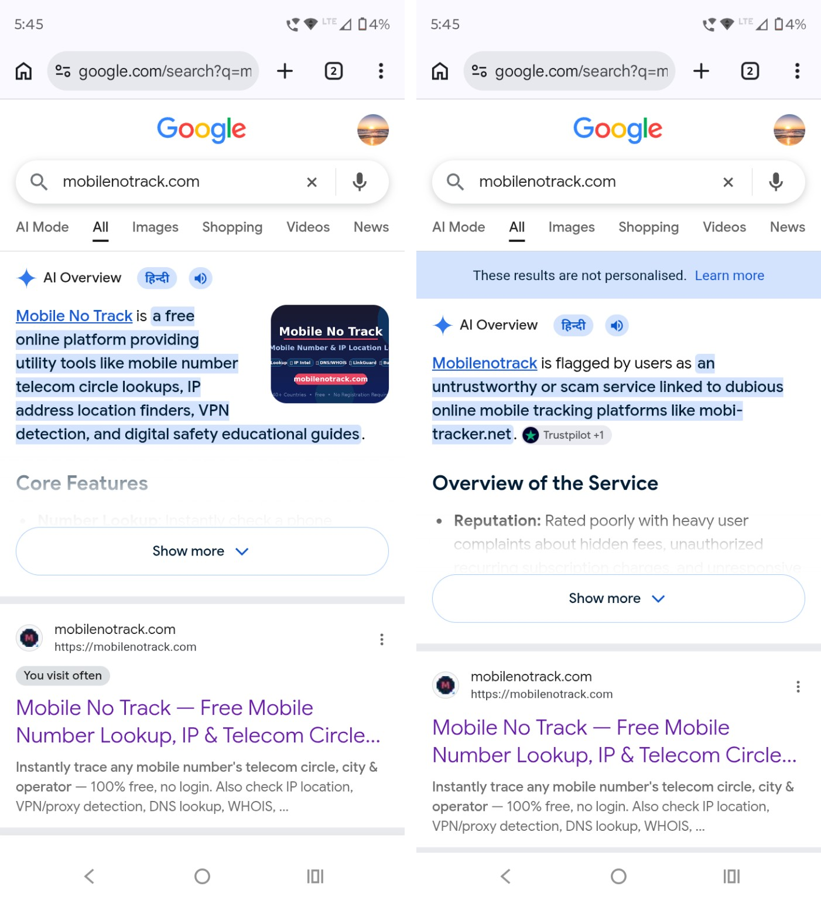

September 2026 · Technical Web Research · Mobile No Track Technical Research Team
Google AI Overviews use generative artificial intelligence to provide summaries of information found through Google Search. Google itself states that AI Overviews can make mistakes and may provide inaccurate information.
This creates an important web-search problem when different websites have similar names or when information from one domain is incorrectly associated with another domain.
This Blog 31 documents a real-world example involving mobilenotrack.com, where different Google AI Overview results appeared to provide substantially different descriptions of the same website.
When searching for mobilenotrack.com, Google AI Overview produced different results depending on the search context.
One result correctly described mobilenotrack.com as a free online platform providing utility and technical tools.
Another non-personalised result displayed negative information and referenced Trustpilot complaints associated with a completely different domain, mobi-tracker.net.
The search results demonstrate an unusual discrepancy: the same genuine website can receive substantially different AI-generated descriptions depending on the search environment.
The personalised result identified the actual services and nature of mobilenotrack.com.
The non-personalised result instead presented negative information and connected the domain with complaints that appear to belong to another website.
Similar names, domains, brands and third-party references can create difficult attribution problems for automated systems.
An AI system may encounter information from multiple sources and attempt to connect those sources into a single answer. If entity matching or domain attribution is incorrect, information belonging to one website can potentially appear in an answer about another website.
For website owners, this can create serious reputational and search-visibility concerns because users may believe that an AI-generated statement is an authoritative description of the website.
In the observed result, Google AI Overview displayed information related to Trustpilot complaints and associated that information with mobilenotrack.com.
However, the complaints shown in the result referenced mobi-tracker.net, which is a different domain.
AI-generated search summaries should not automatically be treated as verified facts. Generative systems can combine information from different sources, misunderstand relationships between entities, or produce incorrect conclusions.
The example documented in this article demonstrates why website owners and users should verify important claims against the original source and the actual domain being discussed.
The following evidence compares the personalised and non-personalised Google AI Overview results for the same website.
The left side shows the personalised result, which correctly identifies the nature of mobilenotrack.com.
The right side shows the non-personalised result, which presents negative information and appears to associate complaints from mobi-tracker.net with mobilenotrack.com.
This case demonstrates a potential domain-attribution problem in AI-generated search results. A system may produce different descriptions of the same website and may potentially associate information from another domain with the wrong website.
The purpose of this research is not to claim that every Google AI Overview result is incorrect. Instead, it demonstrates why AI-generated search summaries should be independently verified, especially when they contain serious claims about a website's reputation or legitimacy.
For the most accurate information about Mobile No Track, users should verify information directly from the official domain: mobilenotrack.com.
The screenshot evidence below directly captures the algorithmic contradiction inside Google AI Overview when searching for mobilenotrack.com:

mobilenotrack.com as a free online platform offering utility tools (telecom circle lookup, IP finder, VPN detection).
mobi-tracker.net) directly to mobilenotrack.com.